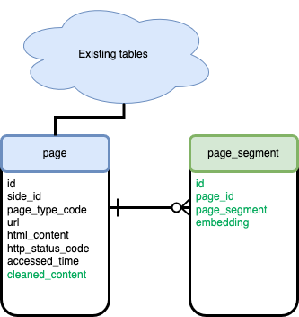

Chapter 2 Programming assignment 2

2.1 Introduction
The goal of this programming assignment is to extract useful information from the crawled websites and store it in a vector database for answering domain-specific questions. The assignment consists of three parts:
- Identifying and extracting important information
- Identifying and extracting important information
- Storing information to a vector database
- Storing information to a vector database
- Retrieving information relevant to the query
2.2 Identifying and extracting information
In this part of the assignment, your task is to identify meaningful content (such as article titles, product names, descriptions, prices, or publication dates) from HTML documents and extract it in a structured format. The goal is to prepare high-quality data that can later be stored in a vector database and queried efficiently.
You will explore two main techniques: XPath expressions and regular expressions.
2.2.1 Using XPath expressions
One approach to navigate XML and HTML files is to use XPath expressions. XPath (XML Path Language) is a syntax for navigating through elements and attributes in an XML/HTML document tree.
XPath allows you to:
- Select nodes or node-sets in an XML document
- Navigate based on element names, attribute values, and hierarchy
- Perform conditional searches using predicates
Basic XPath Syntax:
/html/body/div— selects adivelement that is a child ofbody, which is a child ofhtml//p— selects all<p>elements in the document//div[@class="content"]— selects all<div>elements with a class attribute equal to “content”//a[@href]— selects all anchor tags with anhrefattribute
Python Example Using XPath:
2.2.2 Using regular expressions
Another approach to content extraction is using regular expressions (regex). Regular expressions are powerful tools for pattern matching and text processing. While regex can be faster for small and well-structured tasks, it is more error-prone for messy or deeply nested HTML. Use it when you know the structure of the text you’re working with and want to quickly extract specific elements.
Basic Regex Syntax:
.— matches any character except newline
*— matches 0 or more repetitions
+— matches 1 or more repetitions
?— makes the preceding token optional
[]— matches any one character in the brackets
()— groups expressions
\d— matches any digit
\s— matches whitespace^— matches the start of a string$— matches the end of a string
Common Regex Examples and What They Match:
| Regular Expression | Matches |
|---|---|
<h2>(.*?)</h2> |
The text inside an <h2> tag |
href="(.*?)" |
The value of an href attribute |
<p>(.*?)</p> |
Paragraph content between <p> tags |
\d{4}-\d{2}-\d{2} |
Dates in YYYY-MM-DD format |
\$[0-9]+\.[0-9]{2} |
Dollar amounts like $19.99 |
<[^>]+> |
Any HTML tag |
You can test your regular expressions expressions at regexr.com.
Python Example Using Regular Expressions:
import re
html_content = """
<html>
<body>
<div class="article">
<h2>Sample Article</h2>
<p>Published on 2024-12-05</p>
<p>Price: $19.99</p>
<a href="https://example.com">Read more</a>
</div>
</body>
</html>
"""
# Extract article title
title = re.search(r'<h2>(.*?)</h2>', html_content)
print(title.group(1)) # Output: Sample Article
# Extract date
date = re.search(r'\d{4}-\d{2}-\d{2}', html_content)
print(date.group(0)) # Output: 2024-12-05
# Extract price
price = re.search(r'\$[0-9]+\.[0-9]{2}', html_content)
print(price.group(0)) # Output: $19.99
# Extract link
link = re.search(r'href="(.*?)"', html_content)
print(link.group(1)) # Output: https://example.comRegular expressions can be concise and effective for small-scale, well-formatted content. However, for more complex HTML, tools like XPath (or HTML parsers like BeautifulSoup) are generally more reliable.
2.2.3 Your task
You should use XPath and Regular expressions to filter the HTML websites you gathered in PA1.
- Prepare a plain text version of the website where you remove static elements like website headers, menus, footers, etc., while keeping the page’s content.
- Define criteria for splitting the page into multiple thematic sections. Some suggestions include using paragraphs, sentences, page sections, or any other indicators, with the goal of each section being a complete description of one topic. Include a brief description of the criteria in the PA2 report.
- You have to select the most appropriate strategy for dividing text and list its advantages and disadvantages in the PA2 report. It is often necessary to conduct some testing to determine what works best. Without a proper approach, you risk overlooking important information or providing incomplete or out-of-context retrieved segments when querying the vector database. Some of the key factors to consider when dividing the text into smaller portions are the size of segments and context preservation.
2.3 Storing extracted information in a vector database
The next step of the assignment is to calculate embeddings for text segments and store the extracted information in a vector database. For this, you will expand the database you created in PA1 with a new table that stores document segments and their vector representations.
For a more streamlined start, you can utilize the following sample.
2.3.1 Preparing the database
Make sure you are using a pgvector database. Pgvector is a PostgreSQL extension that adds support for storing and indexing vector data. You can create a new pgvector database using the following command:
docker run --name postgresql-wier \
-e POSTGRES_PASSWORD=SecretPassword \
-e POSTGRES_USER=user \
-e POSTGRES_DB=wier \
-v $PWD/pgdata:/var/lib/postgresql/data \
-v $PWD/init-scripts:/docker-entrypoint-initdb.d \
-p 5432:5432 \
-d pgvector/pgvector:pg16In your database, enable the vector extension using the statement:
Once you have the database set up, add a new column to the page table to store cleaned plain text content, and create a new table to store page segments and their vector embeddings.

ALTER TABLE crawl_db.page ADD COLUMN cleaned_content TEXT;
CREATE TABLE crawl_db.page_segment (
id serial NOT NULL,
page_id integer,
page_segment TEXT,
embedding vector(768)
);
ALTER TABLE crawl_db.page_segment
ADD CONSTRAINT fk_page_page_segment
FOREIGN KEY (page_id)
REFERENCES crawl_db.page(id)
ON DELETE RESTRICT;You are encouraged to extend the database schema with additional metadata fields that may be useful during retrieval — for example, the HTML tag, section title, heading level, or local context of a segment. If you do, describe these design decisions in your report.
2.3.2 Generate vector embeddings
The next step is to generate vector embeddings for each page segment. Embeddings are fixed-length vector representations of text that capture its semantic meaning.
You should experiment with different embedding models, such as:
all-MiniLM-L6-v2from sentence-transformers- OpenAI’s
text-embedding-ada-002 - Hugging Face Transformers like
distilbert-base-uncased - Any domain-specific models relevant to your dataset (e.g. legal, medical)
2.3.3 Querying the database
By default, pgvector performs an exact search when querying the database. Adding index enables us to use approximate nearest neighbour (ANN) search, which takes less time when compared to exact search. The pgvector supports two indexes, HSNW and IVFFlat. Use one of them in your assignment.
Queries and segments that are similar will map to similar embeddings. By comparing a query embedding to the segment embeddings, you can retrieve the most relevant content based on the chosen metric, such as cosine distance, L1 distance, or inner product..
You can generate embeddings using Python libraries like sentence-transformers, transformers, or openai.
For each segment, compute its embedding and store it in the embedding column of the page_segment table.
2.4 Information retrieval
In this part of the assignment, you will create a simple program that takes a query (for example, a user question) and retrieves the most relevant text segments from your database using vector similarity search.
You can use similarity operators provided by pgvector, such as:
<#>Inner product (higher is more similar)<=>Cosine distance (lower is more similar)<+>L1 distance (lower is more similar)
Your task is to experiment with:
- Different similarity metrics
- Different embedding models
- Including or excluding segment metadata in your embeddings (e.g., including the title or section tag)
- Chunking strategies for segmenting the page (fixed-length? by paragraph? by heading?)
The goal is to find the best combination for your domain, so that given a query, your retriever consistently returns the most useful results.
You should implement a small Python demo program that:
- Accepts a user query
- Computes its embedding
- Performs a similarity search over the segment embeddings in your database
- Returns and displays the top-k most relevant segments
In the demo program, include five queries that return relevant results for your domain, and prepare at least one query that does not return the expected result.
2.6 What to submit
Publish your work into the same repository as you used for the first assignment. The repository must comply with the following structure:
pa2/
├── report-extraction.pdf # PDF report with description and evaluation
├── README.md # Setup instructions for running the code
├── implementation-extraction/ # Your implementation code (well documented)
│ └── demo.py # A demo script that allows us to test the retriever
├── extraction-db/ # Your database including extracted segments and their embeddings2.6.1 What to include in the report
Your report should include the following:
- Information about how you performed website filtering.
- Approach to dividing the text, including criteria for splitting the page into multiple thematic sections, the implemented strategy for dividing text, and advantages and disadvantages of the implemented strategy.
- What embeddings did you decide to use, and why
- What similarity metric did you decide to use, and why
- Examples of queries and your retriever’s responses
- Limitations of your document retriever (e.g. examples of queries with inadequate responses)
Make sure to also describe methods you tried but decided not to use.